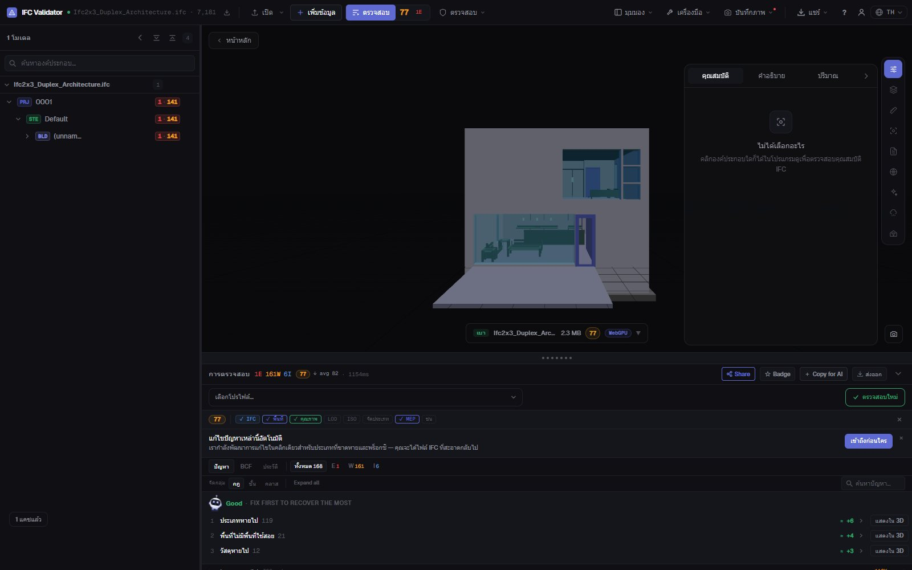
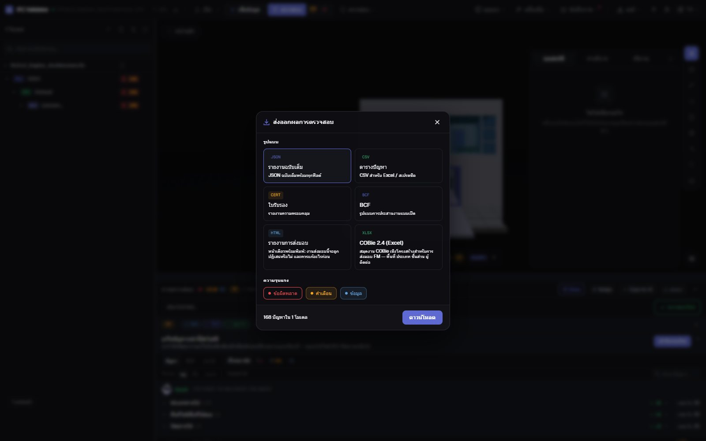

ตรวจสุขภาพโมเดล IFC
คะแนนและรายงานใน 30 วินาที
ลากไฟล์ IFC มาวางเพื่อตรวจด้วยกฎคุณภาพ 44 ข้อ (GUID โครงสร้างเชิงพื้นที่ ประเภท วัสดุ ชุดคุณสมบัติ พิกัด) แล้วรับ Health Score ตั้งแต่ 0 ถึง 100 โดยแสดงสามปัญหาที่หักคะแนนมากที่สุดก่อน จากนั้นส่งออกรายงานส่งมอบที่พิมพ์ได้ ใบรับรอง BCF หรือ COBie
ตรวจโมเดล — ฟรี →ไม่ต้องมีบัญชี · ไม่อัปโหลด · ทำงานในเบราว์เซอร์ · ฟรี

สิ่งที่ทำได้
การตรวจที่ส่งมอบต่อได้ทันที
ตัวเลขเดียวสำหรับเจ้าของงาน รายการครบถ้วนสำหรับผู้สร้างโมเดล และหลักฐานสำหรับ CDE
Health Score 0–100
คะแนนคุณภาพข้อมูลของโมเดล ถ่วงน้ำหนักตามความรุนแรง พร้อมค่าเฉลี่ยอุตสาหกรรมให้เปรียบเทียบ
สิ่งที่ควรแก้ก่อน
กฎที่หักคะแนนมากที่สุดพร้อมคะแนนที่จะได้คืน และปุ่มแสดงองค์ประกอบใน 3D
กฎ 44 ข้อ + IDS
GUID ลำดับชั้นเชิงพื้นที่ องค์ประกอบกำพร้า ประเภท วัสดุ Pset หน่วย พิกัด การชน และไฟล์ IDS ของ buildingSMART
รายงานส่งมอบที่พิมพ์ได้
รายงาน HTML หน้าเดียว (งานนี้จะถูกปฏิเสธหรือไม่ ต้องแก้อะไร) ที่พิมพ์หรือบันทึกเป็น PDF จากเบราว์เซอร์ได้
ใบรับรอง BCF COBie
ใบรับรองความครอบคลุม ประเด็น BCF 2.1 สำหรับผู้สร้างโมเดล CSV/JSON และสมุดงาน COBie 2.4
ไม่อัปโหลด
การตรวจทำงานในเบราว์เซอร์ด้วย WebAssembly ใช้ได้กับงาน NDA แบบออฟไลน์ และบนคอมพิวเตอร์ทุกเครื่อง
ภาพหน้าจอ

คำถามที่พบบ่อย
คำถามที่พบบ่อย
การตรวจสุขภาพโมเดล IFC คืออะไร?
การตรวจคุณภาพข้อมูลของไฟล์ IFC แบบอัตโนมัติ: โครงสร้าง ตัวระบุ การจัดหมวดหมู่ คุณสมบัติ และพิกัด IFC Viewer Online สรุปเป็น Health Score 0–100 และแสดงทุกปัญหาพร้อมองค์ประกอบที่เกี่ยวข้อง
ได้ผลเป็นรายงาน PDF ไหม?
ได้ ส่งออก "รายงานส่งมอบ" ซึ่งเป็นรายงาน HTML หน้าเดียวที่พิมพ์ได้ มีคะแนน จำนวนปัญหา และลำดับความสำคัญ เปิดแล้วพิมพ์หรือ "บันทึกเป็น PDF" จากเบราว์เซอร์ นอกจากนี้ยังมีใบรับรอง JSON, CSV, BCF และ COBie
ต้องอัปโหลดโมเดล IFC เพื่อตรวจไหม?
ไม่ต้อง ต่างจากบริการที่ต้องอัปโหลด ไฟล์จะถูกเปิดและตรวจในเบราว์เซอร์ และไม่ถูกส่งไปยังเซิร์ฟเวอร์
คะแนนเท่าไรถือว่าดี?
90–100 พร้อมส่งมอบ 75–89 ใช้ประสานงานได้โดยแก้เล็กน้อย 50–74 ต้องแก้ก่อนส่งมอบ ต่ำกว่า 50 มีปัญหาข้อมูลร้ายแรง
ฟรีไหม?
ฟรีทุกกรณีรวมถึงโครงการเชิงพาณิชย์ ไม่ต้องมีบัญชี และไม่มีการเก็บเงินตามขนาดไฟล์
ตรวจโมเดลก่อนที่เจ้าของงานจะตรวจ
Health Score · สิ่งที่ควรแก้ก่อน · รายงานที่พิมพ์ได้ · BCF · COBie
ตรวจโมเดล — ฟรี →